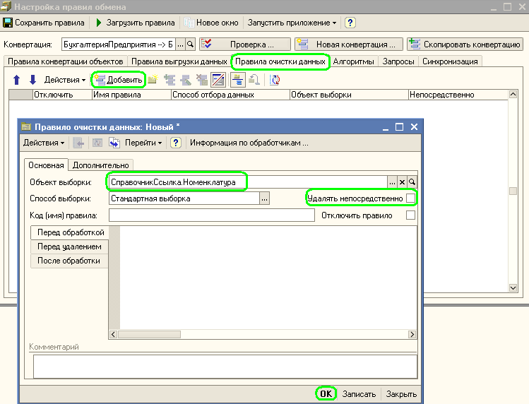

Правила очистки данных используются довольно редко. Их основная задача пометить на удаление или удалить из информационной базы некоторые объекты перед загрузкой данных.
Рассмотрим один из вариантов использования правил очистки данных на примере:
Торговое предприятие принимает решение открыть офис по приему заказов на продукты питания в пригороде. Для эффективной работы необходимо постоянно иметь в базе данных офиса актуальную версию справочника Номенклатура. Причем, было решено каждый раз помечать на удаление те номенклатурные позиции, которых в настоящий момент нет на складе в центральном офисе. Загрузка справочника должна производиться еженедельно, при этом товары, зарегистрированные в базе данных офиса, заказ которых стал невозможен (например, нет на складе) должны быть помечены на удаление, или при восстановлении доступности номенклатурной позиции для заказа - пометка удаления должна быть снята.
Реализовать такой механизм нам поможет использование правил очистки данных. Правила очистки выполняются в базе приемнике перед загрузкой объектов. С помощью этого инструмента можно пометить на удаление или удалить непосредственно объекты данных. В нашем случае мы будем ставить пометки на удаления у элементов справочника Номенклатура. При синхронизации элемента справочника в момент загрузки, пометка будет снята, поскольку загружаемые элементы Номенклатуры не имеют пометки на удаление. Таким образом, все "лишние" элементы, отсутствующие в загружаемом файле, останутся помеченными на удаление.
Правила очистки данных задаются на закладке "Правила очистки данных". Покажем как это делается:

Достаточно указать объект для выборки данных - то есть для удаления, указать что нужно помечать объекты на удаление, а не физически удалять из информационной базы и нажать на "ОК".